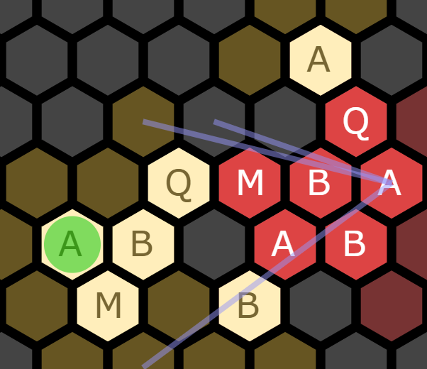
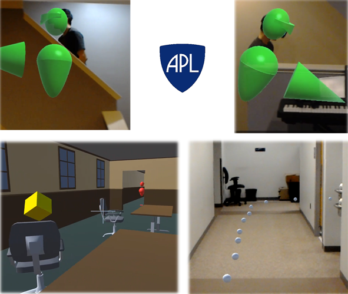
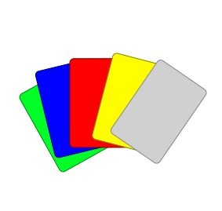
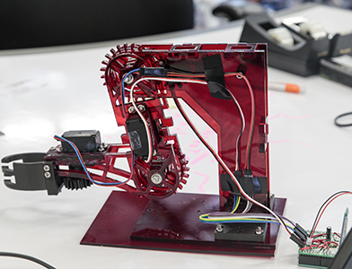
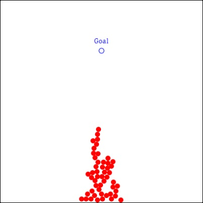
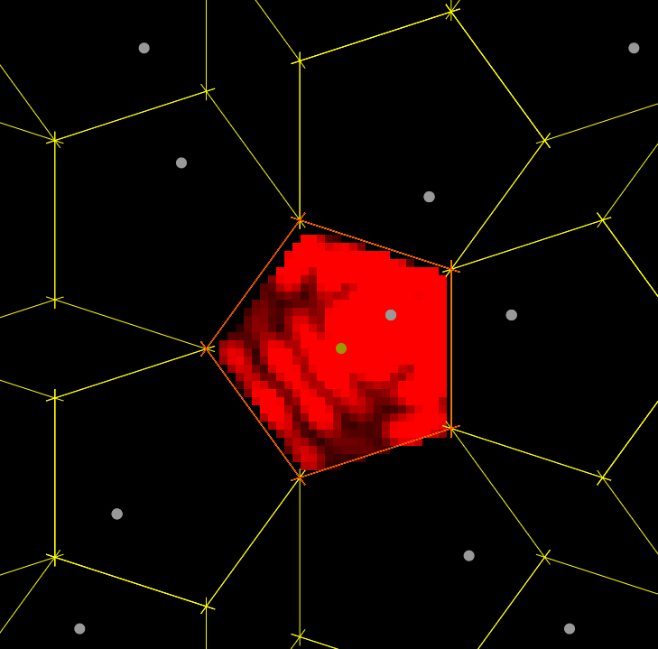
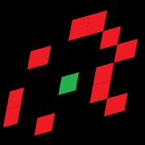
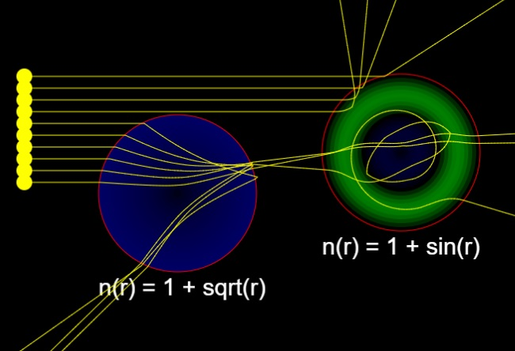
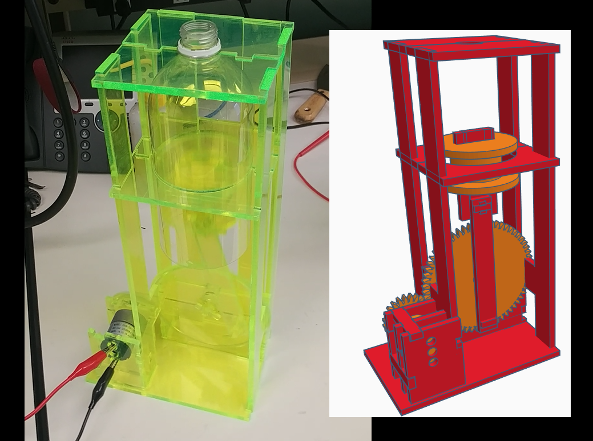
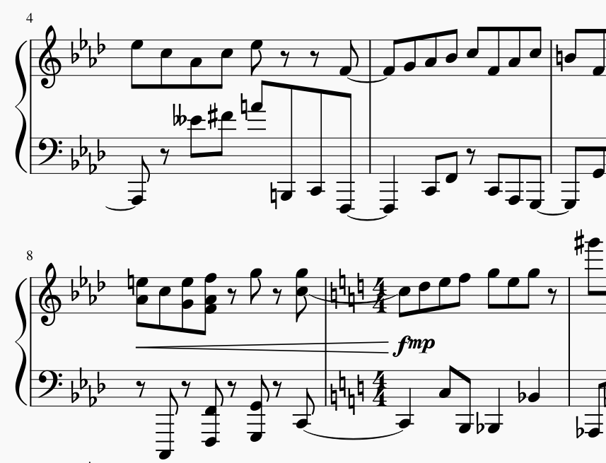

I developed an AI to play the tile game Hive. Hive is a unique, dynamic, and complex game for which there aren't many strong AIs yet. I built an interactive tool that allows you to play with the AI or view its suggestions for any game state.

At APL, I led a project to build a system of body-worn sensors that would allow tactical team members to see each other through floors, walls, and obstacles in augmented reality. Using Microsoft's HoloLens, we demonstrated this and other exciting capabilties of tactial use of AR.

I developed a Hanabi AI that won APL's Learning to Read Minds Challenge by achieving the highest scores when playing with human teammates. My bot took the lead over other APL agents as well as agents developed by DeepMind, Facebook, and academia.

To win an APL hackathon, I built a robot arm that I controlled remotely with my own! From start to finish, this devices was designed and built in one week and was predominately built of laser cut acrylic with some 3D printed hardware.

Recently I've explored the idea of generating adversarial inputs to neural networks based not on knowledge of the target network, but rather on knowledge of the input space. Through a formalism that treats the weights of unknown, target networks as random variables, I explore how one can craft attacks for neural networks that do not yet exist!

View a simple, thought provoking example of a swarm of individualistically-minded agents "accidentally" cooperate to reach a common goal.

Using a custom simulation, I explore how the propagated signal of a transmitter in a closed room is equivalent to open-air signal of an infinite lattice of ghost transmitters, and implications this has for indoor localization and room geometry estimation.

Juke Boxes is a simple puzzle game which I built into a free Android app. I built the app to familiarize myself with Android development.

I made a simulator for ray optics for inhomogeneous metamaterials. This simulator is most comfortably driven by a mouse rather than a finger, so I recommend a non-mobile platform for viewing.

I created a design for a working, motor driven, pneumatic pump that is cut entirely out of acrylic and requires no connective hardware (other than some cut acrylic snap components). This was part of an effort at APL to explore ways to maximize the accessibility of functional ventilators in response to the Covid-19 outbreak.

I spend a lot of my free time making musical creations. From jazz to classical, arrangements to original compositions, I like to dabble in just about everything.